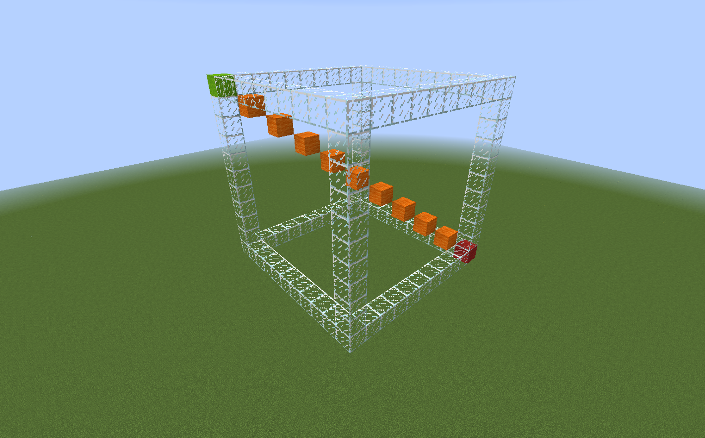
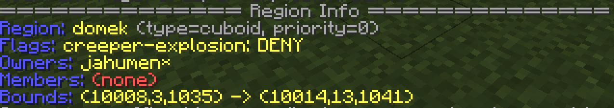
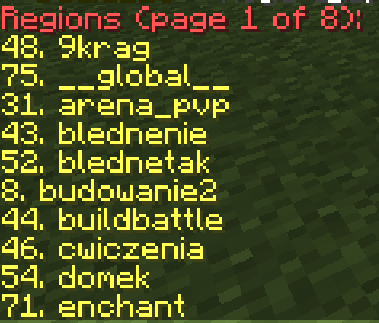
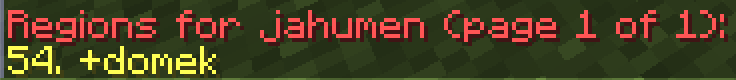
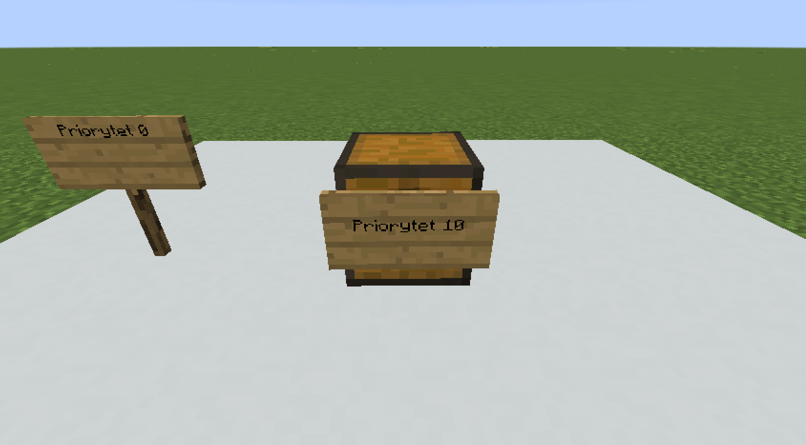

WorldGuard - poradnik
Głównym zastosowaniem WorldGuarda jest ochrona świata.
Instalacja
WorldGuard wymaga do poprawnego działania pluginu WorldEdit.
- Pobierz plugin WorldEdit z oficjalnej strony.
- Skopiuj plik WorldEdit.jar do folderu plugins.
- Pobierz plugin WorldGuard z oficjalnej strony.
- Skopiuj plik WorldGuard.jar do folderu plugins.
- Włącz serwer.
Tworzenie i edycja regionów
Tworzenie regionów
W celu stworzenia regionu, musisz najpierw zaznaczyć teren przy użyciu pluginu WorldEdit.
Trzymając drewnianą siekierę zaznacz pierwszy punkt klikając LPM i następnie zaznacz drugi punkt klikając PPM. Drewnianą siekierę możesz stworzyć samemu lub otrzymać ją za pomocą komendy //wand.
Zaznaczenie powstanie w wyniku połączenia tych dwóch punktów.

{kind=link}
WorldGuard obsługuje regiony będące wielokątami, więcej informacji na temat użycia WorldEdita znajdziesz w dedykowanym do niego poradniku.
Po zaznaczeniu terenu użyj komendy /rg define <nazwa regionu> [właściciel].
Nazwa regionu to unikalne ID regionu, nie można stworzyć dwóch regionów z tą samą nazwą na jednym świecie. Nazwa regionu nie może zawierać spacji.
Podaniu argumentu właściciel spowoduje ustalenie właściciela regionu (więcej informacji poniżej).
Po utworzeniu regionu automatycznie gracze nie będą mogli wykonywać żadnych niepożądanych akcji, w tym edytować bloków, otwierać skrzynek, drzwi, wsiadać na zwierzęta, do wagoników itp. na jego terenie. Domyślnie modyfikować region może tylko administracja z odpowiednim uprawnieniem i gracze dodani do niego jako członkowie lub właściciele.
Edycja terenu regionu
Jeśli chcesz zedytować obszar, który obejmuje dany region, utwórz nowe zaznaczenie przy użyciu pluginu WorldEdit, a następnie wpisz komendę /rg redefine <nazwa regionu>.
Usuwanie regionu
W celu usunięcie regionu użyj komendy /rg delete <nazwa regionu>.
Sprawdzanie informacji na temat regionów
/rg info <nazwa regionu>komenda wyświetli wszystkie informacje na temat konkretnego regionu.

* /rg list [-p gracz] [strona] komenda wyświetli listę wszystkich regionów. Obsługuję flagę -p gracz (np. /rg list -p jahumen), która umożliwia sprawdzanie listy regionów, do których dodany jest konkretny gracz.


* Trzymając w ręce domyślnie skórę, kliknij PPM na dowolny blok - spowoduje to wyświetlenie informacji na temat znajdującego się tam regionu.
{kind=link}
{kind=link}
{kind=link}
Członkowie
Członkowie to osoby, które mają uprawnienia do edycji bloków na terenie regionu, otwierania skrzynek itp, jednak nie mogą modyfikować flag, dodawać innych członków itp.
Dodawanie członków
/rg addmember <nazwa regionu> <członek>
W polu członek możesz wpisać zarówno nick gracza jak i grupę, w formacie g:admin.
Usuwanie członków
/rg removemember <nazwa regionu> <członek>
Właściciele
Właściciele regionu mają uprawnienia do edycji innych właścicieli, członków, flag itp. (zarządzają regionem).
Pierwszy właściciel jest domyślnie dodawany w komendzie /rg define <nazwa regionu> [właściciel].
Dodawanie właścicieli
/rg addowner <nazwa regionu> <właściciel>
W polu właściciel możesz wpisać zarówno nick gracza jak i grupę, w formacie g:admin.
Usuwanie właścicieli
/rg removeowner <nazwa regionu> <właściciel>
Flagi
Domyślnie na terenie stworzonego regionu nie można budować, edytować bloków itp, jednak możesz to zmodyfikować dla konkretnego regionu za pomocą flag.
/rg flag <nazwa regionu> <flaga> [stan]
Jeśli nie podasz stanu flagi, zostanie on ustawiony na domyślny, czyli flaga zostanie usunięta.
Komenda obsługuje dodawanie flag obowiązujących tylko konkretne grupy, w formacie g:admin.
Najpopularniejsze flagi
passthrough(allow/deny) - flaga sprawia, że region używa flag z regionu nadrzędnego.build(allow/deny) - flaga pozwala na budowanie na terenie regionu.interact(allow/deny) - flaga pozwala na interakcję, czyli otwieranie drzwi, skrzynek, wciskanie przycisków itp.use(allow/deny) - flaga pozwala na otwieranie drzwi, wciskanie przycisków itp, jednak nie pozwala na otwieranie skrzynek.pvp(allow/deny) - flaga umożliwia zadawanie obrażeń graczom.tnt(allow/deny) - flaga umożliwia wysadzanie TNT.mob-spawning(allow/deny) - flaga umożliwia pojawianie się mobów.deny-spawn(lista) - flaga określa listę mobów, które nie mogą spawnować się na danym cuboidzie, np.pig,cow.enderman-grief(allow/deny) - flaga umożliwia niszczenie terenu przez endermany.fire-spread(allow/deny) - flaga umożliwia rozprzestrzenianie się ognia.creeper-explosion(allow/deny) - flaga umozliwia wybuchy creeperów.snow-fall(allow/deny) - flaga umożliwia powstawanie śniegu.snow-melt(allow/deny) - flaga umożliwia roztapianie się śniegu.ice-melt(allow/deny) - flaga umożliwia roztapianie się lodu.leaf-decay(allow/deny) - flaga umożliwia znikanie liści.enderpearl(allow/deny) - flaga umożliwia teleportację przy użyciu pereł.chorus-fruit-teleport(allow/deny) - flaga umożliwia teleportację przy użyciu owoców chorusa.item-pickup(allow/deny) - flaga umożliwia podnoszenie przedmiotów.item-drop(allow/deny) - flaga umożliwia upuszczanie przedmiotów.invincible(allow/deny) - flaga sprawia, że gracze na terenie regionu są nieśmiertelni.fall-damage(allow/deny) - flaga sprawia, że gracze nie odczuwają obrażeń od upadku na terenie regionu.blocked-cmds(lista) - komendy, których użycie nie będzie dostępne na terenie regionu, np.spawn,warp,home.greeting(tekst) - wiadomość, która wyświetli się graczowi gdy wejdzie na region.farewell(tekst) - wiadomość, która wyświetli się graczowi gdy wyjdzie z regionu.
Listę wszystkich flag możesz sprawdzić przy użyciu komendy /rg flags [nazwa regionu].
Istnieją także pluginy dodawające więcej flag.
Priorytet regionów
W pewnych miejscach może znajdować się równocześnie więcej niż jeden region. W takiej sytuacji gracz musi być dodany do każdego z nich, by móc na przykład niszczyć bloki. Jeśli regiony mają rózne priorytety, w danym miejscu będą obowiązywały zasady tylko regionu, który znajduje się tam i ma najwyższy priorytet.
/rg setpriority <nazwa regionu> <priorytet>
Domyślnym priorytetem jest 0, możesz go zedytować dla konkretnych regionów (zarówno na wartości dodatnie jak i ujemne).
Przykładowe wykorzystanie:
* Utworzenie skrzynki na spawnie, którą gracze mogą otwierać, podczas gdy wszystkie inne są zablokowane. W tym celu utwórz region skrzynka obejmujący tylko skrzynkę, następnie ustaw flagę umożliwiającą korzystanie ze skrzynek, /rg flag skrzynka use allow i ustaw priorytet tego regionu na wyższy niż w przypadku spawnu, np. /rg setpriority skrzynka 10.

* Utworzenie strefy PVP na spawnie, gdzie gracze mogą ze sobą walczyć. W tym celu utwórz region arena obejmujący arenę, następnie ustaw flagę umożliwiającą walkę graczy /rg flag arena pvp allow i ustaw priorytet tego regionu na wyższy niż w przypadku spawnu, np. /rg setpriority arena 10.
{kind=link}
Dziedziczenie (parent)
W przypadku dziedziczenia określana jest struktura regionów (rodzic <- dziecko). Dziedziczenie działa podobnie jak priorytety, jednak regiony znajdujące się niżej w strukturze dziedziczą zasady z regionów wyżej (parent).
/rg setparent <nazwa regionu> [nazwa regionu rodzica]
nazwa regionu to nazwa regionu, który będzie znajdował się niżej w strukturze (dziedziczył flagi i członków).
nazwa regionu rodzica to nazwa regionu, który będzie znajdował się wyżej w strukturze (udostępniał flagi i członków).
W celu usunięcia rodzica (odłączenia regionu), po prostu nie podawaj nazwy regionu rodzica.
Przykładowe utworzenie hierarchii:
 1. Utwórz wszystkie zaplanowane regiony i ustaw dla nich odpowiednie flagi.
2. Ustaw rodzica
1. Utwórz wszystkie zaplanowane regiony i ustaw dla nich odpowiednie flagi.
2. Ustaw rodzica miasto dla regionów sklep, centrum-handlowe, dzialki i salon, np. /rg setparent dzialki miasto.
3. Ustaw rodzica sklep dla regionów sklep-1, sklep-2, sklep-3, np. /setparent sklep-1 sklep.
4. Ustaw rodzica dzialki dla regionów dzialka-1, dzialka-2, dzialka3, np. /setparent dzialka-1 dzialki.
Przykładowe wykorzystanie:
* Stworzenie sklepów na terenie centrum handlowego, z których mogą korzystać tylko konkretni gracze, jednak zarząd centrum powinien mieć także dostęp do wszystkich znajdujących się tam sklepów. W tym celu utwórz najpierw region centrum-handlowe, ustaw odpowiednie flagi i dodaj do niego członków zarządu. Następnie stwórz na jego terenie mniejsze regiony, obejmujące konkretne sklepy sklep-1, sklep-2 i tak dalej. Dodaj właścicieli sklepów do konkretnych regionów i ustaw odpowiednie flagi. Przyporządkuj regiony sklepów jako dzieci centrum handlowego - /rg setparent sklep-1 centrum-handlowe, /rg setparent sklep-2 centrum-handlowe itp.
* Utworzenie działek dla graczy na terenie miasta, do których powinni mieć dostęp osoby zajmujące się miastem - sposób postępowania jak wyżej.
Teleportacja do regionu
W celu przeteleportowania się do konkretnego regionu użyj komendy /rg teleport <nazwa regionu>.
Region globalny
Istnieje region __global__, który obejmuje cały świat. Domyślnie nie ma żadnych flag. Ma najniższy priorytet, więc utworzenie jakiegokolwiek regionu go nadpisze.
Możesz go wykorzystać gdy chcesz zabronić graczom walczyć lub budować na konkretnym świecie, np. /rg flag __global__ pvp deny, /rg flag __global__ build deny.
Przykładowe wykorzystanie:
* Zablokowanie wybuchów spowodowanych przez creepery na świecie world. W tym celu przeteleportuj się na świat world i użyj komendy /rg flag __global__ creeper-explosion deny.